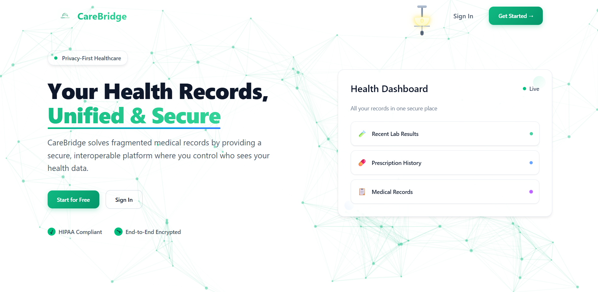
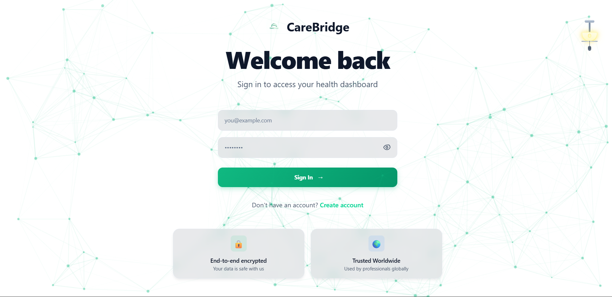
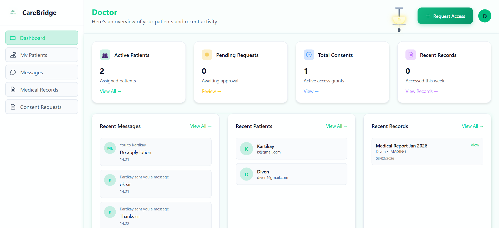

Problem
Healthcare users often struggle with confusing navigation, unclear service information, and disconnected booking journeys.
Case Study
A healthcare platform UI concept designed to simplify discovery, trust, and patient flow.
Healthcare users often struggle with confusing navigation, unclear service information, and disconnected booking journeys.
I focused on a modern, clean UI with clear call-to-actions, structured content blocks, and a responsive flow to improve usability across devices.
The key challenge was keeping the patient journey smooth while connecting multiple cloud-backed services. Data needed to load quickly, content had to stay consistent across pages, and interactions had to remain clear on mobile.
I used a component-driven Next.js structure, organized API interactions into predictable flows, and designed reusable UI blocks so updates stayed maintainable. This reduced UI friction and made the booking journey easier to follow.

Home Page

Login Page

Doctor Dashboard